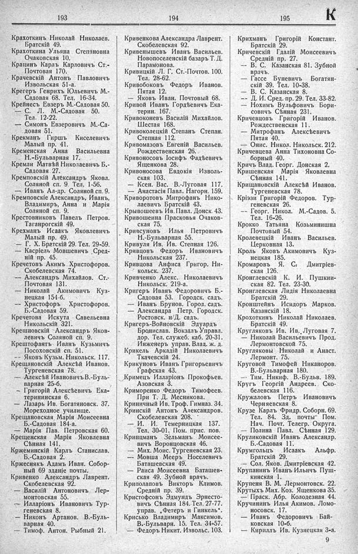

Лист источника 415
Скан

Распознанный текст
193
Крахоткинъ Николай Николаев.
Братскій 49.
Крахоткина Ульяна Степановна
Очаковская 10.
Крацинъ Карлъ Карловичъ Ст.-
Почтовая 170.
Крачевскій Антонъ Павловичъ
Извольская 51-а.
Крегеръ Генрихъ Юльевичъ М.-
Садовая 68. Тел. 16-34.
Крейнесъ Евзеръ М.-Садовая 50.
— С. Л. М.-Садовая 50.
Тел. 12-22.
— Симонъ Евзеровичъ М.-Са-
довая 51.
Крекманъ Гиршъ Киселевичъ
Малый пр. 41.
Кременская Анна Васильевна
Н.-Бульварная 17.
Кремли Матвѣй Николаевичъ Б.-
Садовая 27.
Кремповскій Александръ Яковл.
Соляной сп. 9. Тел. 1-56.
— Иванъ Ал-др. Соляной сп. 9.
Кремповскіе Александръ, Иванъ,
Владимиръ, Анна и Марія
Соляной сп. 9.
Крестовниковъ Павелъ Петров.
Таганрогскій 49.
Крехманъ Исаакъ Яковлевичъ
Малый пр. 49.
— Г. Х. Братскій 29. Тел. 29-59.
— Касріель Мовшевичъ Сред-
ній пр. 45.
Кречетовъ Акимъ Христофоров.
Скобелевская 74.
— Александръ Михайлов. Ст.-
Почтовая 131.
— Николай Акимовичъ Куз-
нецкая 154-б.
— Христофоръ Христофоров.
Б.-Садовая 59.
Кречетова Искута Савельевна
Никольскій 321.
Крешновскій Александръ Яков-
левичъ Соляной сп. 9.
Крештофантъ Иванъ Кузьмичъ
Посоховскій сп. 51.
— Яковъ Кузьм. Никольск. 117.
Крещановскій Алексѣй Иванов.
Тургеневская 78.
— Алексѣй Ивановичъ В.-Буль-
варная 25-б.
— Григорій Алексѣевичъ Ека-
терининская 6.
— Лазарь Ив. Богатяновск. 37.
Мореходное училище.
Крещановская Марія Моисеевна
Б.-Садовая 184-а.
— Марія Пав. Петровская 60.
Крещенская Марія Яковлевна
Сѣнная 141.
Кржеминскій Карлъ Станислав.
Б.-Садовая 2.
Кржеснякъ Адамъ Иван. Собор-
ный 69 зданіе почты.
Кривенко Александръ Лаврент.
Скобелевская 92.
— Василій Антоновичъ Лер-
монтовская 55.
— Илларіонъ Ивановичъ Тур-
геневская 8.
— Никонъ Артанов. В.-Буль-
варная 40.
— Тимоф. Антон. Рыбный 21.
194
Кривенкова Александра Лаврент.
Скобелевская 92.
Кривенышевъ Иванъ Васильев.
Новопоселенскій базаръ Т. Д.
Парамонова.
Кривицкій Л. Г. Ст.-Почтов. 100.
Тел. 28-62.
Кривобоковъ Федоръ Иванов.
Пятая 12.
— Яковъ Иван. Почтовый 68.
Кривой Иванъ Гордѣевичъ Ека-
терин. 167.
Кривоконевъ Василій Михайлов.
Шестая 168.
Кривоколецкій Степанъ Степан.
Степная 112.
Кривомазовъ Евгеній Васильев.
Рождественская 26.
Кривоносовъ Іосифъ Фадѣевичъ
Ященкова 28.
Кривоносова Евдокія Изволь-
ская 103.
— Ксен. Вас. В.-Луговая 117.
— Анастасія Павл. Нагорн. 159.
Криворотовъ Митрофанъ Нико-
лаевичъ Братскій 43.
Крывошеевъ Ив. Павл. Донск. 43.
Кривошеина Прасковья Очаков-
ская 75.
Кривсуновъ Илья Петровичъ
Н.-Бульварная 55.
Кривуля Ив. Ив. Степная 126.
Кривцовъ Федоръ Ивановичъ
Никольская 237.
Кривцова Анфиса Григор. Ни-
кольск. 237.
Кривченко Алекс. Николаевичъ
Никольск. 219-а.
Кригеръ Иванъ Федоровичъ Б.-
Садовая 53. Городск. садъ.
— Иванъ Брунов. Город. садъ.
— Александра Петр. Городск.
Ростовск. н/Д. садъ.
Кригеръ-Войновскій Эдуардъ
Бронислав. Вокзалъ Управл.
дор. Тел. служеб. каб. 20-31.
Инженеръ управ. Влад. ж. д.
Крикель Аркадій Николаевичъ
Ткачевскій 24.
Крикуновъ Иванъ Григорьевичъ
Графская 43.
Кримецъ Илларіонъ Прокофьев.
Азовская 3.
Криморенко Федоръ Тимофеев.
При Т. Д. Месникова.
Криничный Ив. Троф. Гимназ. 34.
Кринскій Антонъ Александров.
Скобелевская 208.
— И. И. Темерницкая 137.
Тел. 30-01. Пом. прис. пов.
Крипцманъ Зельманъ Моисее-
вичъ Воронцовская 46.
— Мих. Моис. Тургеневская 23.
— Мовша Мееръ Носелевичъ
Баташевская 49.
— Раиса Моисеевна Баташев-
ская 49. Зубной врачъ.
Криполаповъ Викторъ Климов.
Средній пр. 39.
Кристофсонъ Эдмундъ Эрнесто-
вичъ Сѣнная 184. Тел. 27-77.
управ. „Фетеръ и Гинкель“.
Крисько Владимиръ Максимов.
В.-Бульварн. 15. Тел. 34-57.
— Федоръ Никит. Извольс. 103.
195 К
Крихманъ Григорій Констант.
Братскій 29.
Кричевскій Гдалій Моисеевичъ
Средній пр. 27.
— В. С. Казанская 81. Зубной
врачъ.
— Гассе Буневичъ Богатян-
скій 39. Тел. 10-38.
— В. С. Казанская 8.
-- Д. И. Сред. пр. 29. Тел. 33-82.
— Нохимъ Вульфовичъ Бори-
совичъ Сѣнная 231.
Кричевцовъ Григорій Иванов.
Рождественская 11.
— Митрофанъ Алексѣевичъ
Пятая 40.
— Онис. Никол. Никольск. 212.
Кричевцева Анна Тихоновна Со-
борный 40.
Кричъ Влад. Георг. Донская 2.
Кришенская Марія Яковлевна
Сѣнная 141.
Крищановскій Алексѣй Иванов.
Тургеневская 78.
Кріэзи Григорій Федоров. Тур-
геневская 26.
--- Георг. Никол. М.-Садов. 5.
Тел. 16-26.
Крокко Татьяна Козьминишна
Почтовый 54.
Кролевецкій Иванъ Васильев.
Церковная 13.
Кроль Яковъ Акимовичъ Куз-
нецкая 185.
Кромаровъ Я. С. Дмитріев-
ская 126.
Кронглевскій К. И. Пушкин-
ская 82. Тел. 23-30.
Кронглевская Лидія Николаевна
Братскій 29.
Кронштейнъ Исидоръ Марков.
Казанскій 18.
Крохоткинъ Николай Николаев.
Братскій 49.
Кругляковъ Ив. Ив. Луговая 7.
— Николай Васильевичъ Прод.
Лермонтовской 75.
Кругляковы Николай и Анаст.
Лермонт. 75.
Круговой Тимофей Никаноров.
В.-Бульварная 180.
— Тим. Никиф. В.-Бульв. 189.
Кругъ Георгій Андреев. Ско-
белевская 116.
Кружаловъ Петръ Ивановичъ
Черняевская 8.
Крузе Карлъ Фридр. Соборн. 69.
Тел. 84. Зд. почты Пом.
Нач. Почт. Телегр. Округа.
— Полина Павл. Сѣнная 129.
Круликовскій Иванъ Александр.
Б.-Садовая 11.
Крумгольцъ Исаакъ Альфр.
Братскій 29.
— Сол. Яков. Дмитріевская 42.
Крупанинъ Иванъ Ильичъ Пуш-
кинская 1.
Крупеня В. М. Лермонтовск. 22.
Крутыхъ Мих. Коз. Ященкова 35.
— Праск. Абр. Колодезная 44.
Кручининъ Илья Акимов. Ломо-
носовск. 17.
— Иванъ Федоровичъ Бай-
ковская 10-б.
— Кириллъ Ив. Кузнецкая 3-а.
9